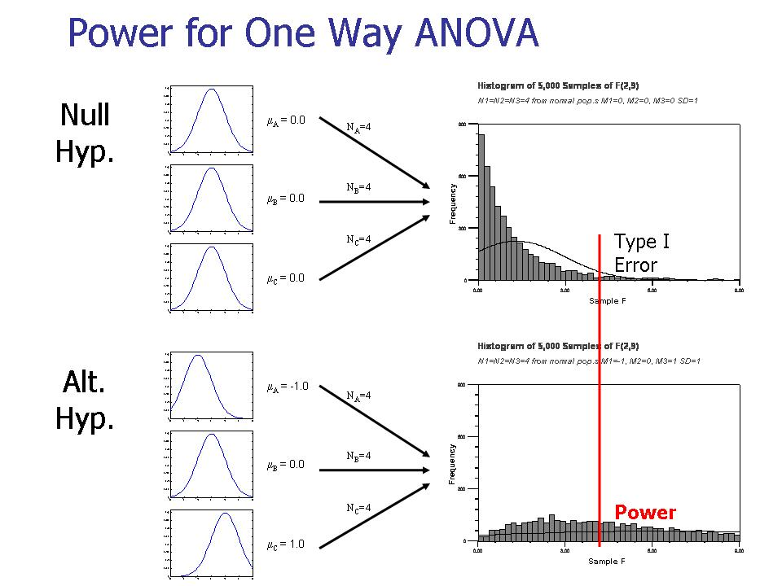
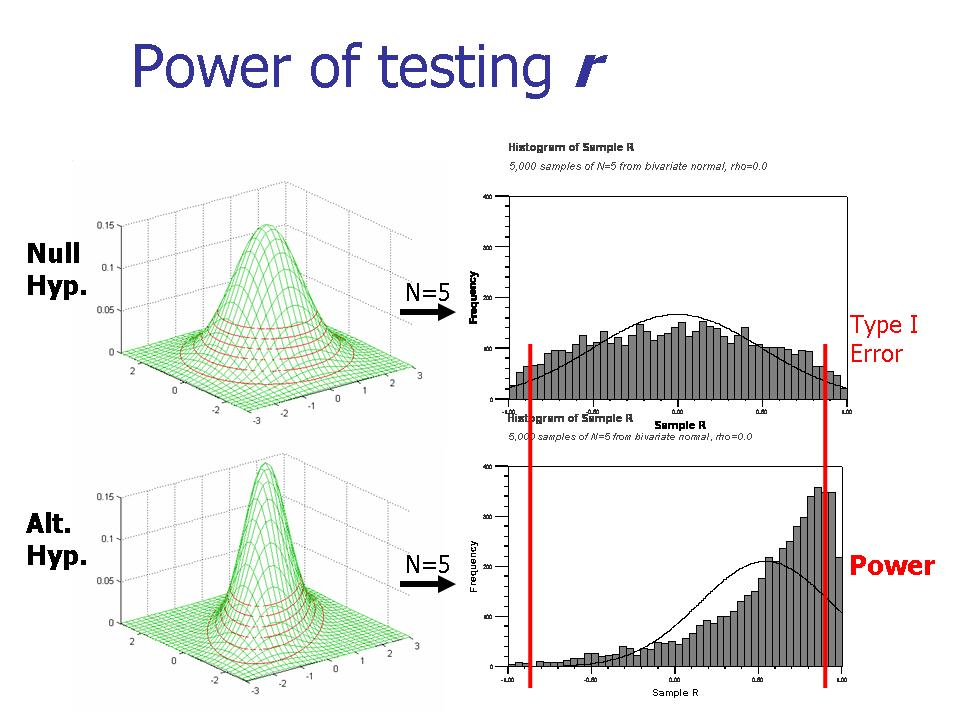

- The fundamental premise of statistics is, "You could be wrong." The "you" in this premise could be a person of power, who might not like being doubted. Ubi dubium ibi libertas.
- Being an academic scientist is like running your own business...
- Three formalizations of central tendency and variability (not in textbook).
- The algebra of mean and variance: Standardized scores. (AA Ch. 2-3)
{kind=link}

|

|

|
| Examples of graphs shown in class. These three show how power increases as sample size increases. Click to enlarge. | ||
{kind=link}
|  |
| Example of power of omnibus test in oneway ANOVA. Click to enlarge. |
{kind=link}
|  |
| Example of power of test of correlation. Click to enlarge. |
{kind=link}
- Transforming to normality. Effects of linear or non-linear transformations on mean and variance.
- Rank-order methods:
- Summed rank (Wilcoxon) test
- ANOVA on rank-transformed data
- Monte-Carlo methods:
- when form of population is specified by model - Monte Carlo sampling
- when form of population is not hypothesized - the randomization technique
Binomial distribution (not in textbook):
- Population has two nominal categories, sampling distribution is binomial.
- Hypothesis testing; power; confidence intervals.
- When N is large: normal and Poisson approximations to binomial.
- Continuous chi-square distribution approximates discrete Pearson chi-square distribution when cell prob's are not extreme.
- Goodness of fit tests and tests of independent attributes.
- Textbook Box 17-1, pp. 620-621.
- Knowledge or Certainty by J. Bronowski. Notes of my visit to Göttingen.